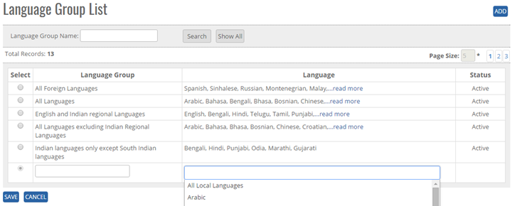


	<section>
		<article>
			<h2>Language Group<span></span></h2>
			<div>
				<p></p>
				

				<p>Language Group comes under Commercial Module.</p>

				<p><b>ADD New Language Group in the master</b></p>

				<p>Click on Language List page. User will get Add button, search Button, Show all button, Page Record, as shown in below image.</p>

				<p>Click Add Button on top right corner of the page and the following page will open as shown in below image: </p>

				<div class="triangle-border top">
					
				</div>


				<p>User can add Language Group Name, Language and status by default it will be Active.</p>

				<p><b>To add Language Group in the system, System will be having following fields</b> </p>

				<p>- User will enter single/Multiple Language Group in Text Box (alphanumeric is valid)</p>

				<p>Click on <b>Save</b> button user will get alert message <b>"Record Updated successfully"</b>.</p>


				<p><b>Note:</b> Modifying existing Language Group, Activation/Deactivation, Search/Show All criteria is same as shown above for Language.</p>


				<p><b>De Activate/ Activate Existing Language</b></p>

				<p><b>DeActive</b> - Click on Deactivate Button, once the button is clicked it will ask confirmation message "Are you sure you want to Deactivate this record" with "OK and cancel" button</p>

				<p>If user clicks on OK Button, record will get deactivated and if clicked on Cancel, record will not get deactivated.</p>

				<p><b>Active</b> - Same way once a record is deactivated, system will show Active button. If user clicks on Active button, record will get activated.</p>


				<p><b>Search / Show All Criteria</b></p>

				<p>- User can search the Language name and then click on <b>Search</b>, it will show the result as per the search criteria. User can search name by single alphabet.</p>

				<p>- If user want to check all Language name then click on <b>Show All</b> Button. It will show the list.</p>
				 
				<p>- Click on page no, System will navigate the desired page, per page 10 records will be displayed.</p>
			</div>
		</article>
	</section>